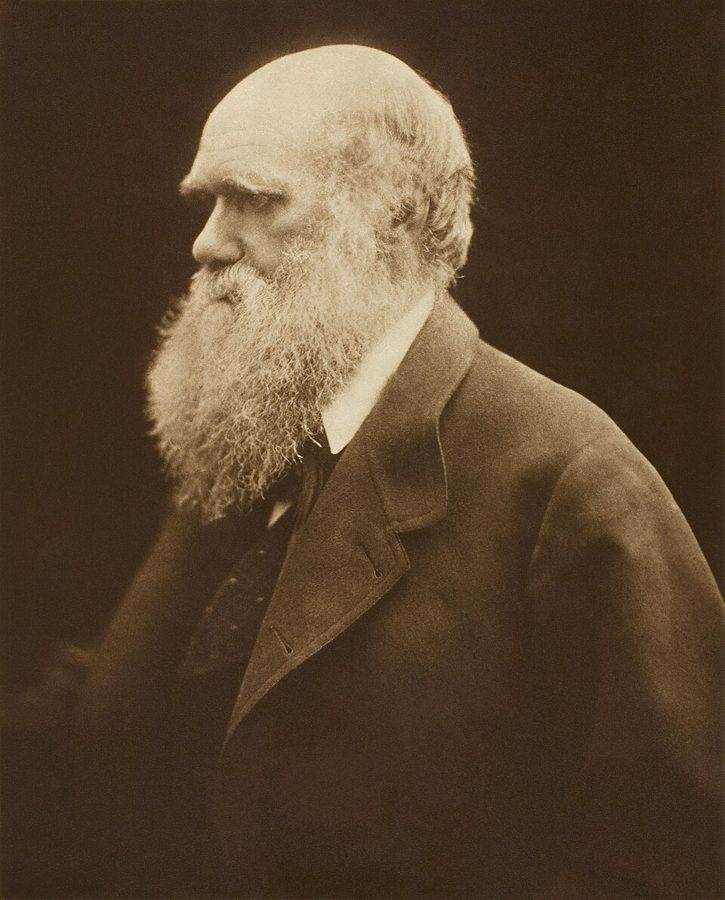
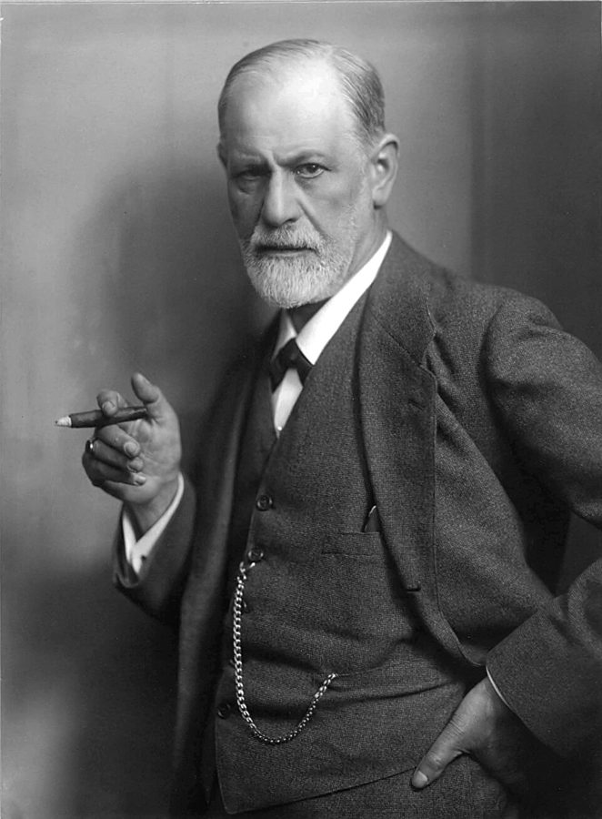

这本书和它的作者
Darwin's Worms: On Life Stories and Death Stories，1999 年由 Faber and Faber 在英国初版，美国是 Basic Books 出的。书名直译是「达尔文的蚯蚓」，副题是「关于生命故事和死亡故事」。正文只有四篇：一篇序章、一篇写达尔文、一篇写弗洛伊德、一篇尾声，合起来约三万三千词，薄薄一本。
作者 Adam Phillips 1954 年生于威尔士的加的夫，是英国的精神分析师，做过多年的儿童心理治疗师（曾任伦敦 Charing Cross 医院的首席儿童心理治疗师），同时是很有名的随笔作家。书前列的他的作品里，最出名的是 On Kissing, Tickling and Being Bored（1993）。这本书出版几年后，他成了企鹅出版社新译弗洛伊德著作的总编。
知道他是精神分析师、又是随笔作家，读这本书就顺多了。他不是在写达尔文或弗洛伊德的传记，也不是在做学术论证，而是拿两人的著作、书信和别人写他们的传记当材料，一段一段地「读」。他读的是字里行间：达尔文赞美什么，弗洛伊德讨厌什么，这些好恶透露了他们心里认为人该怎样活。这种读法的好处是常有意想不到的洞见，坏处是常常只用一句「仿佛（as though）」就从一个细节跳到一个大判断。本站每页最后的「本站怎么看」，就是替你把这两样分开。


全书的线
每一页开头「读之前」里的那条带子，就是这张图的缩小版。隔几周回来、忘了读到哪了，先看这里。
一句话说全书：上帝退场以后，达尔文和弗洛伊德重新讲述「自然是什么样」，于是也重新讲述「人该怎样活」。两人都认为有一部分苦难是活着本身带来的，政治和宗教都消除不了；两人都把死亡放在生命故事的中心。Phillips 说，把两人看成悲观主义者太简单了；他们的道德藏在他们赞美和痛骂的东西里：达尔文赞美蚯蚓，弗洛伊德痛恨传记。
下面四张卡片只说每一篇做什么，不说结论；作者的论点在各页的「读完」里，本站的评价在「本站怎么看」里。
从作曲家凯奇的一个笑话讲起，立下全书的问题：没有上帝、没有救赎，人怎样和失去、和死亡相处；末尾预告两条线索。
2 页从小猎犬号回来的达尔文，回国后最早的几篇论文里有一篇写蚯蚓，最后一本书也写蚯蚓。Phillips 读这两份文本，看达尔文在一个残酷的自然里找到了什么可以赞美。
2 页 + 专页年轻的弗洛伊德烧掉笔记，好让未来的传记作者扑空；晚年他提出死亡驱力，又拒绝别人给他写传。最后读两位传记作者怎样写他的死。
3 页把两条线并在一起：失去、习惯、哀悼、遗忘，以及人怎样和自己终有一死这件事一起活下去。
2 页读完达尔文篇，可以去看本站的达尔文的蚯蚓书：1881 年那本书本身（公有领域），有实验、插图和原文选读。
你手上这本电子书
- 没有小标题。每篇只用空行分成几节（四篇一共 24 节）。各页「分节地图」里的节名是本站起的，后面的英文是那一节第一段开头的几个词，在 Kindle 里搜它就能跳过去。
- 没有尾注。书后只有参考书目，书里引文的出处多半只在正文里提一句（「Freud writes in 1920」）。本站在「书里的人和作品」里补出处，在「原典」里把达尔文、弗洛伊德的原文整段摆出来。
- 引文缠在句子里。Phillips 常把别人的话截成几截嵌进自己的句子，引号又有扫描造成的多缺。拿不准一句话是谁说的，看页面上的说明。
- 有扫描识别的错字。你在 Kindle 上搜过，屏幕上的字和本站用的一样。页面上的英文片段照屏幕上的错字抄，方便你搜；读不通的在各页「词与短语」末尾有说明。下面是全书最常见的几类：
常见的扫描错字（左边是屏幕上的字，搜得到）：
- … that is me legacy of …me 应为 the。同类：find me proper place（序章第 30 段）、theory me less impressed（弗洛伊德篇第 44 段）。
- … what was worm talking about …worm 应为 worth（序章第 6 段）。
- … simply pails of nature …pails 应为 parts（序章第 19 段）。
- … such a tiling as a …tiling 应为 thing（序章第 27 段）。
- … die hardest belief to give up …die 应为 the（序章第 39 段）。
- … at tine very end of his …tine 应为 the（达尔文篇第 12 段）。
- … has more man one meaning …man 应为 than；同一段 of which mere is no mention 的 mere 应为 there（达尔文篇第 28 段）。
- … rather titan a quest for …titan 应为 than；弗洛伊德篇第 39 段 more convincing titan others 同。
- … III-natured people …应为 Ill-natured（弗洛伊德篇第 48 段）。
- … psychoanalysis itself straggled to contain …straggled 应为 struggled（弗洛伊德篇第 63 段）。
- … their cultures fry to disown …fry 应为 try（尾声第 6 段）；tike his family 的 tike 应为 like（尾声第 23 段）。
- … God, Trait, the Soul …Trait 应为 Truth；同一段 more miraculous man our deaths 的 man 应为 than（尾声第 24 段）。
另外，达尔文篇几处把 hierarchy 拼成 heirarchy（只有第 40 段拼对了），多半原书就这样拼，不影响读。
每一页怎么用
读之前（五分钟）：「这一页在做什么」「读之前」「路线」。先知道这几节往哪走、在全书的哪里，读的时候就不会陷在句子里。
读的时候：「分节地图」按节打勾。概念不懂翻「先用中文过一遍」，人和书没听说过翻「书里的人和作品」，Phillips 引的达尔文、弗洛伊德看「原典」，句子读不通翻「词与短语」（只收词典帮不上的说法，单个生词长按 Kindle 就能查）。
读完：「读完：作者到底说了什么」把这几节的论点按逻辑重排；「本站怎么看」摆出主流看法、作者的看法和本站的评论，最后一句是本站的总体判断。然后做「检查一下理解」，写下「想一想」。
隔几周回来：首页的「全书回顾」把各页的「精彩回顾」和本站的总体看法排在一页上，「概念汇总」收着各页讲过的概念。